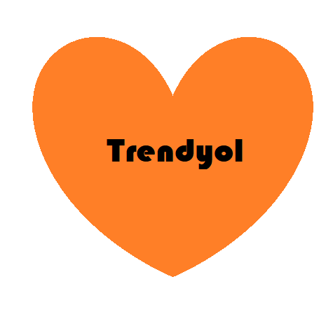
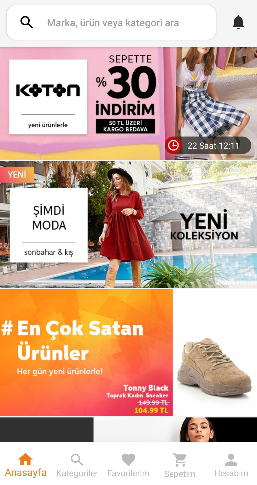

|
|
Büyümesine paralel sunduğu ürün ve hizmetleri genişleterek pazaryeri
modeline geçti. Moda,
elektronik, ev ve mobilya, gıda, anne-çocuk,
kozmetik gibi birçok kategoride yılda300
milyondan
fazla ürünü
müşterilerine ulaştırıyor. Yılda 15 milyondan fazla müşterisi, aylık
ortalama 180
milyon
mobil ziyaret sayısı bulunan platformun mobil
uygulaması bugüne kadar 45 milyon kez
indirildi.
Kendisini teknoloji
şirketi olarak tanımlayan Trendyol, kendi geliştirdiği teknoloji ile
alışverişi
dijitalleştiriyor.KOBİ’lerin dijital dönüşümüne yönelik projeler ve
kampanyalara öncelik
veriyor.Trendyol, toplumsal sorunlarla mücadeleye
katkı veriyor. En son COVID-19 Pandemisi
sırasında Sağlık Bakanlığı’na 5
milyon lira tutarında malzeme ve ekipman tedarik etti,
Cumhurbaşkanlığı’nın
Milli Dayanışma Kampanyası’na da 1 milyon lira tutarında katkı
yaptı.
Dünyanın lider e-ticaret gruplarından Alibaba Group, 2018’de Trendyol’a
stratejik yatırım
yaptı.
Trendyol'un Türkiye’den çıkan ilk unicorn olduğu
yorumları yapıldı.

|

|